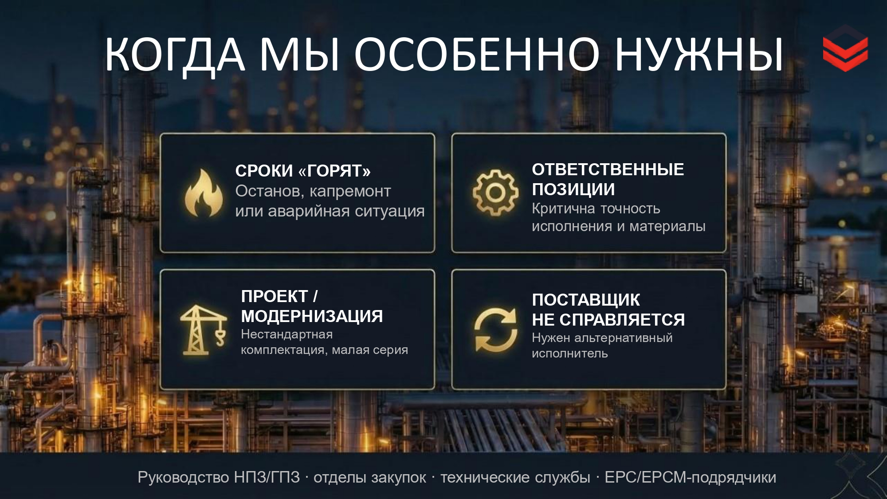
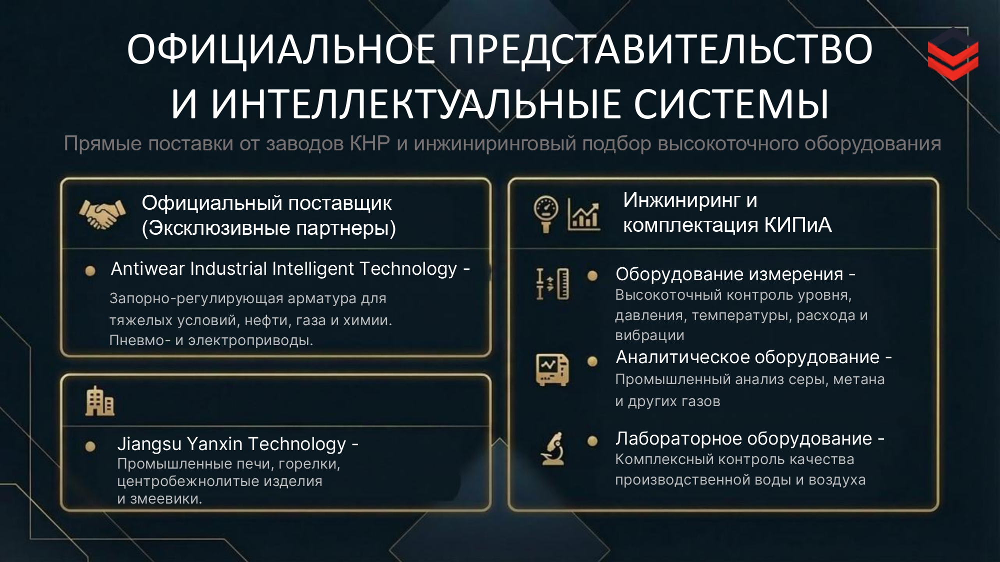

АУРА-ГАРД
Инженерная упаковка B2B-производства для тяжелой промышленности и нефтегазохимии. Презентация собрана как инструмент доверия для ЛПР, тендеров и переговоров.

Упаковка аргументов для сложного B2B-продукта
В этом кейсе смысловая упаковка важнее декоративности. Каждый слайд собран так, чтобы быстро ответить на вопросы заказчика - где риски, как устроен контроль, что подтверждает надежность и почему производитель может взять ответственность на себя.
Структурирование болей B2B-клиента. Использование иконографики и стилистики Dark Engineering для легкого считывания аргументов.

Продуктовый слайд. Сочетание сухих технических характеристик, ГОСТ и ТУ с премиальной 3D-визуализацией промышленной детали.
Презентация как инструмент доверия
Вместо перегруженного техкома клиент получил собранный аргументированный материал, который помогает вести переговоры, подтверждать компетенцию и удерживать внимание ЛПР на ключевых преимуществах.
Что вошло в финальный deck
Блок "АУРА-ГАРД в цифрах", 7-этапная схема производства, визуальный реестр документации ISO и EAC, продуктовые слайды и структура для тендерной коммуникации.